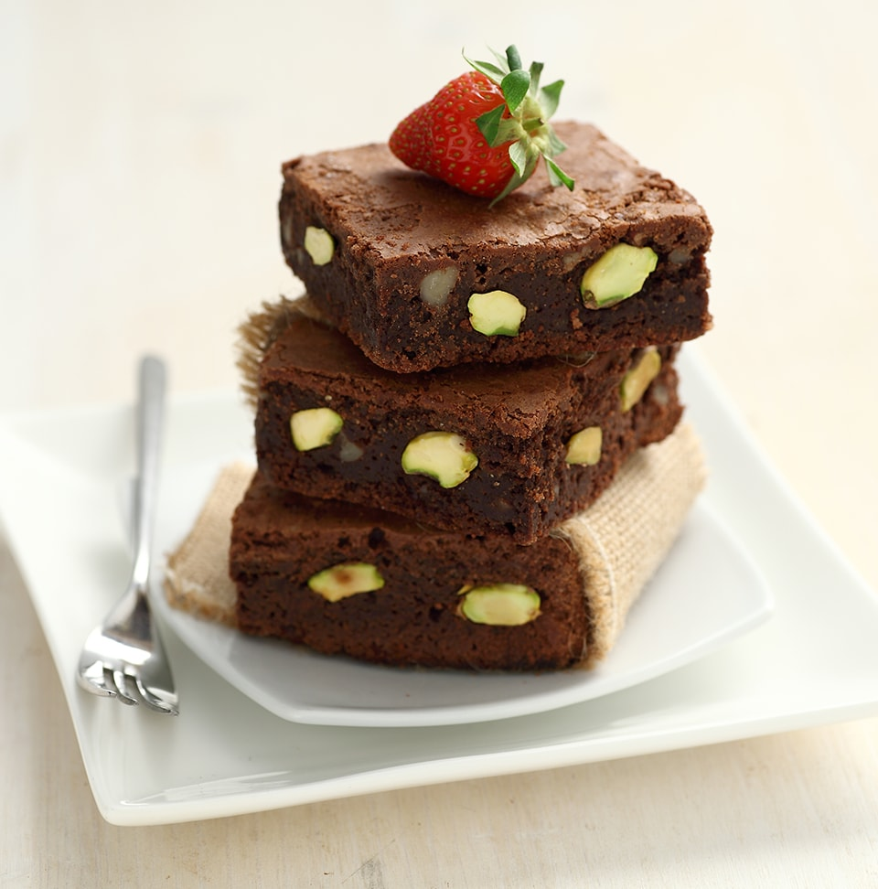

Sciogliere a bagnomaria o nel microonde il cioccolato spezzettato , poi aggiungere il burro e mescolare fino ad avere un composto omogeneo. In una ciotola sbattere leggermente le uova e poi aggiungere il composto di cioccolato e burro. Unire anche la farina setacciata insieme al livito e la polvere di cacao. Mescolare in una spatola in silicone. Incorporare anche le polveri, ovvero farina, cacao amaro e lievito settacciati. Mescolare bene fino ad ottenere composato liscio senza grumi. Per ultimi unire i pistacchi. Rivestire una teglia da forno con carta da forno. Livellare con la spatola l'impasto nella teglia. I brownies devono avere un'altezza di circa 1 cm. Cuocere in forno per circa 30 minuti a 180 gradi C (l'interno dei brownies deve rimanere morbido). Lasciar raffreddare prima di tagliare a quadretti. Se vi piace il te' matcha , potete ottenere un bellissimo effetto semplicimente spolverandolo con un colino a maglie fini sulla superficie dei brownies, appena prima di servirli.
BROWNIES
di Serena Oliva
Ricetta per circa 10 brownies
- 200 g di cioccolato fondente
- 100 g di farina 00
- 160 g di burro
- 180 g di zuccero di canna
- 20 g di cacao amaro in polvere
- 50 g di pistacchi senza pelle
- 6 g di lievito in polvere
- 2 uova